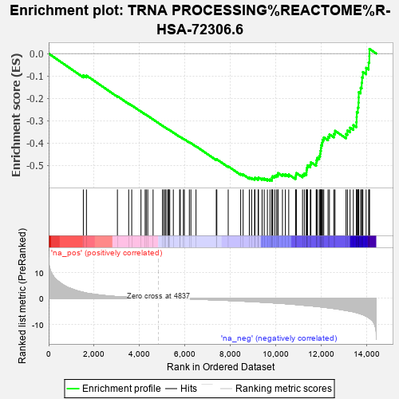
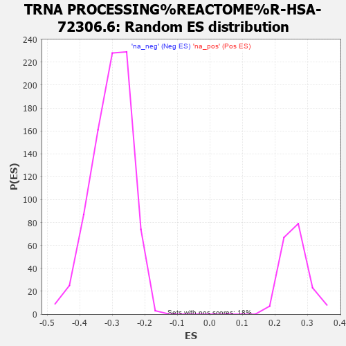

| | | Dataset | MBD2KO_post.rnk |
| Phenotype | NoPhenotypeAvailable |
| Upregulated in class | na_neg |
| GeneSet | TRNA PROCESSING%REACTOME%R-HSA-72306.6 |
| Enrichment Score (ES) | -0.5695086 |
| Normalized Enrichment Score (NES) | -1.8807732 |
| Nominal p-value | 0.0 |
| FDR q-value | 0.02631261 |
| FWER p-Value | 0.151 |
Table: GSEA Results Summary

Fig 1: Enrichment plot: TRNA PROCESSING%REACTOME%R-HSA-72306.6
Profile of the Running ES Score & Positions of GeneSet Members on the Rank Ordered List
| PROBE | GENE SYMBOL | GENE_TITLE | RANK IN GENE LIST | RANK METRIC SCORE | RUNNING ES | CORE ENRICHMENT | | 1 | THG1L | | | 1527 | 2.283 | -0.0970 | No |
| 2 | LAGE3 | | | 1665 | 1.990 | -0.0982 | No |
| 3 | OSGEP | | | 3029 | 0.633 | -0.1906 | No |
| 4 | CPSF4 | | | 3526 | 0.385 | -0.2236 | No |
| 5 | RPP21 | | | 3660 | 0.328 | -0.2315 | No |
| 6 | TRMT10A | | | 4068 | 0.184 | -0.2591 | No |
| 7 | CTU1 | | | 4252 | 0.130 | -0.2714 | No |
| 8 | MTO1 | | | 4300 | 0.121 | -0.2741 | No |
| 9 | TRMT44 | | | 4367 | 0.103 | -0.2783 | No |
| 10 | NUP54 | | | 4601 | 0.051 | -0.2943 | No |
| 11 | DDX1 | | | 5017 | -0.034 | -0.3231 | No |
| 12 | TSEN34 | | | 5070 | -0.043 | -0.3266 | No |
| 13 | LCMT2 | | | 5134 | -0.055 | -0.3307 | No |
| 14 | ZBTB8OS | | | 5166 | -0.062 | -0.3326 | No |
| 15 | RPP40 | | | 5243 | -0.079 | -0.3376 | No |
| 16 | NUP50 | | | 5283 | -0.089 | -0.3400 | No |
| 17 | XPOT | | | 5294 | -0.091 | -0.3403 | No |
| 18 | CTU2 | | | 5336 | -0.097 | -0.3427 | No |
| 19 | AAAS | | | 5493 | -0.131 | -0.3531 | No |
| 20 | PUS3 | | | 5771 | -0.196 | -0.3716 | No |
| 21 | TRMT61A | | | 5799 | -0.201 | -0.3726 | No |
| 22 | NUP88 | | | 5937 | -0.233 | -0.3812 | No |
| 23 | SEC13 | | | 5978 | -0.244 | -0.3830 | No |
| 24 | QTRT1 | | | 6199 | -0.301 | -0.3971 | No |
| 25 | NSUN6 | | | 6268 | -0.320 | -0.4005 | No |
| 26 | TSEN54 | | | 6493 | -0.382 | -0.4145 | No |
| 27 | FAM98B | | | 7386 | -0.653 | -0.4740 | No |
| 28 | TYW5 | | | 7410 | -0.661 | -0.4728 | No |
| 29 | POP7 | | | 7912 | -0.840 | -0.5043 | No |
| 30 | RAE1 | | | 8462 | -1.071 | -0.5381 | No |
| 31 | CPSF1 | | | 8569 | -1.117 | -0.5408 | No |
| 32 | URM1 | | | 8842 | -1.234 | -0.5546 | No |
| 33 | FTSJ1 | | | 8946 | -1.285 | -0.5565 | No |
| 34 | TSEN15 | | | 9074 | -1.345 | -0.5597 | No |
| 35 | NUP85 | | | 9089 | -1.350 | -0.5550 | No |
| 36 | NUP210 | | | 9233 | -1.414 | -0.5591 | No |
| 37 | METTL1 | | | 9245 | -1.423 | -0.5539 | No |
| 38 | TRMT61B | | | 9404 | -1.504 | -0.5587 | No |
| 39 | NUP153 | | | 9498 | -1.550 | -0.5587 | No |
| 40 | NUP160 | | | 9639 | -1.627 | -0.5617 | No |
| 41 | GTPBP3 | | | 9752 | -1.688 | -0.5625 | Yes |
| 42 | CLP1 | | | 9838 | -1.735 | -0.5612 | Yes |
| 43 | TYW1 | | | 9842 | -1.736 | -0.5541 | Yes |
| 44 | TRMT6 | | | 9867 | -1.745 | -0.5485 | Yes |
| 45 | NUP93 | | | 9952 | -1.795 | -0.5469 | Yes |
| 46 | TPR | | | 10030 | -1.838 | -0.5446 | Yes |
| 47 | TRMT112 | | | 10098 | -1.880 | -0.5414 | Yes |
| 48 | RPP30 | | | 10106 | -1.884 | -0.5341 | Yes |
| 49 | TRMT13 | | | 10302 | -1.995 | -0.5393 | Yes |
| 50 | POP5 | | | 10430 | -2.072 | -0.5396 | Yes |
| 51 | ELAC2 | | | 10579 | -2.165 | -0.5409 | Yes |
| 52 | RANBP2 | | | 10880 | -2.381 | -0.5518 | Yes |
| 53 | WDR4 | | | 10896 | -2.397 | -0.5429 | Yes |
| 54 | TRIT1 | | | 10914 | -2.412 | -0.5340 | Yes |
| 55 | TYW3 | | | 11187 | -2.630 | -0.5420 | Yes |
| 56 | RPP14 | | | 11266 | -2.687 | -0.5363 | Yes |
| 57 | TRMT5 | | | 11359 | -2.756 | -0.5312 | Yes |
| 58 | HSD17B10 | | | 11364 | -2.757 | -0.5200 | Yes |
| 59 | ALKBH8 | | | 11385 | -2.773 | -0.5098 | Yes |
| 60 | TRMU | | | 11407 | -2.785 | -0.4996 | Yes |
| 61 | RPP38 | | | 11529 | -2.882 | -0.4960 | Yes |
| 62 | POP4 | | | 11555 | -2.900 | -0.4857 | Yes |
| 63 | DUS2 | | | 11789 | -3.102 | -0.4890 | Yes |
| 64 | NUP37 | | | 11801 | -3.115 | -0.4768 | Yes |
| 65 | C2orf49 | | | 11836 | -3.147 | -0.4660 | Yes |
| 66 | NUP133 | | | 11923 | -3.229 | -0.4586 | Yes |
| 67 | NUP188 | | | 11961 | -3.276 | -0.4475 | Yes |
| 68 | RAN | | | 11978 | -3.291 | -0.4349 | Yes |
| 69 | NSUN2 | | | 11998 | -3.307 | -0.4224 | Yes |
| 70 | CSTF2 | | | 12009 | -3.317 | -0.4093 | Yes |
| 71 | POM121 | | | 12052 | -3.352 | -0.3982 | Yes |
| 72 | TPRKB | | | 12067 | -3.371 | -0.3851 | Yes |
| 73 | ADAT1 | | | 12123 | -3.422 | -0.3747 | Yes |
| 74 | RPP25 | | | 12311 | -3.636 | -0.3726 | Yes |
| 75 | RTCB | | | 12372 | -3.723 | -0.3612 | Yes |
| 76 | NUP214 | | | 12570 | -3.931 | -0.3586 | Yes |
| 77 | NUP43 | | | 12620 | -3.996 | -0.3453 | Yes |
| 78 | TRDMT1 | | | 13104 | -4.642 | -0.3597 | Yes |
| 79 | NUP35 | | | 13165 | -4.739 | -0.3441 | Yes |
| 80 | NUP205 | | | 13281 | -4.960 | -0.3314 | Yes |
| 81 | TRMT12 | | | 13426 | -5.188 | -0.3198 | Yes |
| 82 | THADA | | | 13561 | -5.461 | -0.3064 | Yes |
| 83 | TRMT1 | | | 13571 | -5.489 | -0.2841 | Yes |
| 84 | NUP107 | | | 13577 | -5.498 | -0.2615 | Yes |
| 85 | TRNT1 | | | 13624 | -5.629 | -0.2413 | Yes |
| 86 | TRMT11 | | | 13651 | -5.702 | -0.2193 | Yes |
| 87 | NUP155 | | | 13661 | -5.726 | -0.1960 | Yes |
| 88 | TRMT10C | | | 13664 | -5.743 | -0.1722 | Yes |
| 89 | ADAT2 | | | 13747 | -5.981 | -0.1530 | Yes |
| 90 | TSEN2 | | | 13793 | -6.108 | -0.1307 | Yes |
| 91 | PUS7 | | | 13811 | -6.187 | -0.1061 | Yes |
| 92 | TP53RK | | | 13846 | -6.268 | -0.0823 | Yes |
| 93 | NDC1 | | | 13990 | -6.840 | -0.0637 | Yes |
| 94 | POP1 | | | 14100 | -7.431 | -0.0403 | Yes |
| 95 | NUP62 | | | 14131 | -7.619 | -0.0107 | Yes |
| 96 | CDKAL1 | | | 14135 | -7.624 | 0.0209 | Yes |
Table: GSEA details [plain text format]

Fig 2: TRNA PROCESSING%REACTOME%R-HSA-72306.6: Random ES distribution
Gene set null distribution of ES for TRNA PROCESSING%REACTOME%R-HSA-72306.6